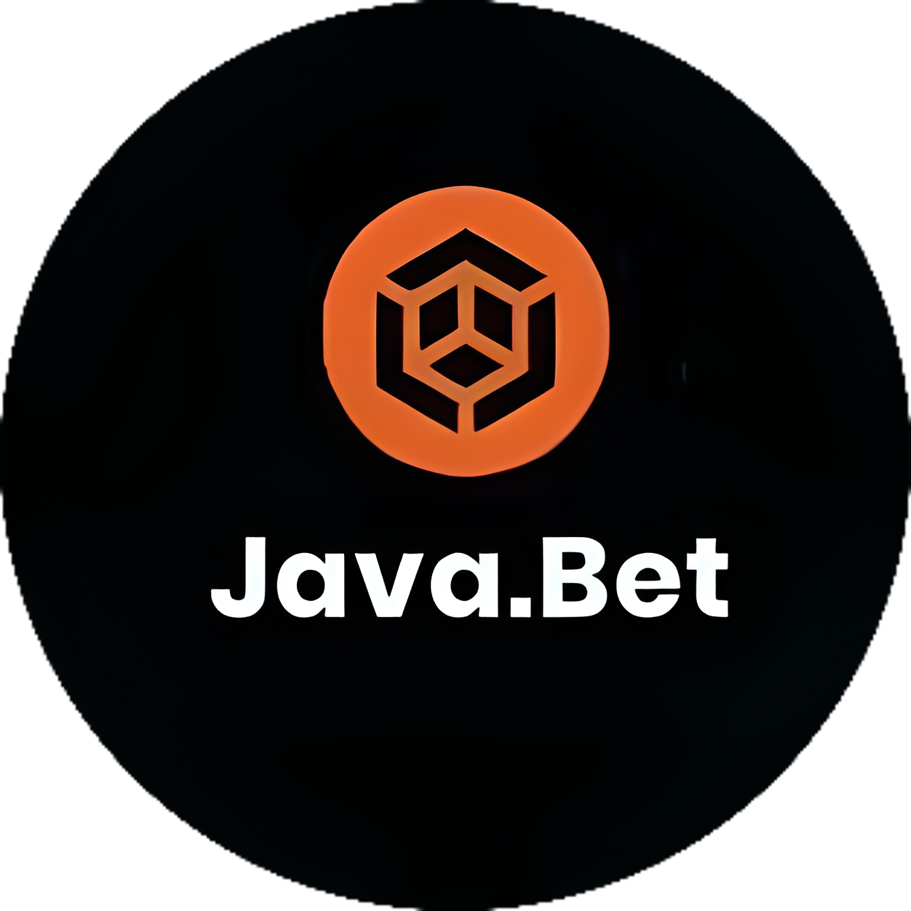
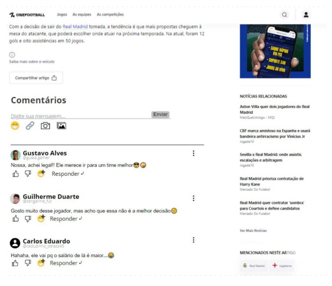
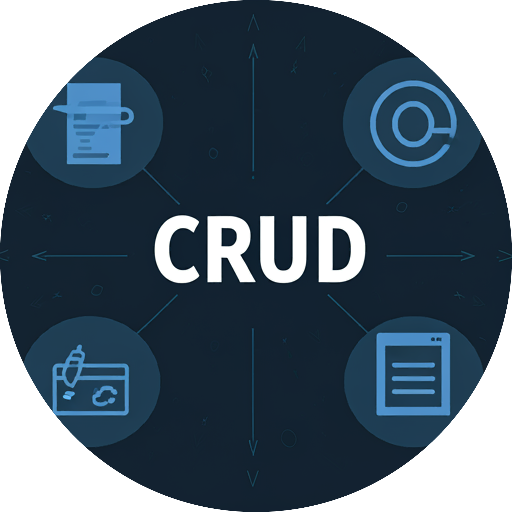

Sobre mim
Olá! Meu nome é Carlos Eduardo Cardoso Barreiros. Tenho 19 anos e atualmente estou cursando o quinto
semestre de Ciência da Computação na Universidade Anhembi Morumbi. Concluí o ensino médio em 2022 no
Colégio Adventista da Liberdade e sempre tive uma paixão por computadores, além de uma aptidão natural
para assuntos relacionados. Ao longo da minha jornada, desenvolvi um forte interesse por áreas
relacionadas a dados, modelagem de software e desenvolvimento de soluções inovadoras baseadas em
software.
Minha trajetória inclui experiências enriquecedoras além da sala de aula. Durante seis meses, morei na Alemanha, onde joguei futebol profissionalmente pelo Fv Rot-Weiß Weiler. Essa vivência não apenas me permitiu aprimorar meu inglês em um ambiente internacional, mas também fortaleceu habilidades valiosas como disciplina, resiliência, trabalho em equipe e capacidade de adaptação.
Mesmo conciliando a carreira esportiva, nunca deixei de priorizar meus estudos. Transferi minha graduação para o formato EAD e continuei investindo em cursos extracurriculares. Essa determinação me levou a decidir, em 2024, dedicar-me integralmente à área de TI, onde vejo um enorme potencial para crescer e contribuir com soluções que realmente façam a diferença.
Atualmente, busco minha primeira experiência profissional em TI, com foco em dados, desenvolvimento de soluções tecnológicas e inteligência artificial, áreas nas quais pretendo construir minha carreira a longo prazo. No entanto, também estou aberto a oportunidades, buscando sempre aprender e me adaptar às necessidades do mercado. Alguns de meus conhecimentos incluem: Programação, Bancos de Dados, Computação em Nuvem, Modelagem de Software, Análise de Dados e Inteligência Artificial.
Entre minhas habilidades interpessoais, destacam-se o foco, a organização, o bom relacionamento interpessoal, o trabalho em equipe e o forte potencial para aprendizagem. Além disso, continuo aprimorando meu inglês com aulas particulares, para garantir um domínio completo do idioma em ambientes técnicos e de negócios. Estou ansioso para trazer minhas habilidades, minha determinação e meu entusiasmo para contribuir com projetos desafiadores e inovadores.
Minha trajetória inclui experiências enriquecedoras além da sala de aula. Durante seis meses, morei na Alemanha, onde joguei futebol profissionalmente pelo Fv Rot-Weiß Weiler. Essa vivência não apenas me permitiu aprimorar meu inglês em um ambiente internacional, mas também fortaleceu habilidades valiosas como disciplina, resiliência, trabalho em equipe e capacidade de adaptação.
Mesmo conciliando a carreira esportiva, nunca deixei de priorizar meus estudos. Transferi minha graduação para o formato EAD e continuei investindo em cursos extracurriculares. Essa determinação me levou a decidir, em 2024, dedicar-me integralmente à área de TI, onde vejo um enorme potencial para crescer e contribuir com soluções que realmente façam a diferença.
Atualmente, busco minha primeira experiência profissional em TI, com foco em dados, desenvolvimento de soluções tecnológicas e inteligência artificial, áreas nas quais pretendo construir minha carreira a longo prazo. No entanto, também estou aberto a oportunidades, buscando sempre aprender e me adaptar às necessidades do mercado. Alguns de meus conhecimentos incluem: Programação, Bancos de Dados, Computação em Nuvem, Modelagem de Software, Análise de Dados e Inteligência Artificial.
Entre minhas habilidades interpessoais, destacam-se o foco, a organização, o bom relacionamento interpessoal, o trabalho em equipe e o forte potencial para aprendizagem. Além disso, continuo aprimorando meu inglês com aulas particulares, para garantir um domínio completo do idioma em ambientes técnicos e de negócios. Estou ansioso para trazer minhas habilidades, minha determinação e meu entusiasmo para contribuir com projetos desafiadores e inovadores.
Habilidades técnicas
Java
JavaScript
HTML e CSS
React
SQL
NodeJS
Nuvem (Computação)
Git e GitHub
UML e Engenharia de Requisitos
Projetos

Aplicação JavaBet
Este é um projeto de faculdade, em que foi desenvolvido um
aplicativo de jogos
online, com jogos como blackjack e caça-níquel. O aplicativo inclui registro de
usuário, funcionalidade de login e uma tela de moderador com controle de usuário. Tudo foi
desenvolvido em Java, inclusive o banco de dados, onde as informações são armazenadas em array
de
objetos, no qual os desafios eram testar o domínio do aluno com lógica e programação orientada a
objetos.
tecnologias usadas: Java
Melhoria para OneFootball
Este também é um projeto de faculdade, mas de natureza
mais teórica. Envolveu a modelagem de uma melhoria para o aplicativo OneFootball,
especificamente a
criação de uma área de comunidade no aplicativo onde os usuários pudessem interagir com o
conteúdo
de notícias. O foco principal de desenvolvimento deste projeto foi a Modelagem de Dados, com
utilização de UML (Unified Modeling
Language),
para os diagramas e Engenharia de requisitos, para as implementações.
tecnologias usadas: UML and Engenharia de Requisitos


Aplicação CRUD
Aplicação web completa que simula um
sistema de cadastro e gerenciamento de usuários, desenvolvido como desafio pessoal para
aprofundar conhecimentos em desenvolvimento full-stack. O sistema permite que os usuários façam
seu cadastro e login, visualizem suas informações e excluam suas contas. Para moderadores, há um
painel com funcionalidades de controle completo sobre os usuários, incluindo cadastro, edição e
exclusão.
tecnologias usadas: React, CSS Tailwind, Node.js, Express e MySQL
Contatos
-

+55 11 95039-4818
-

cadu1117@hotmail.com
-
Carlos Eduardo Cardoso Barreiros
-

São Paulo, BRASIL